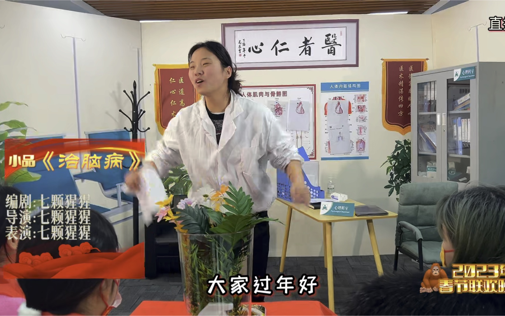

近年来，春晚作为中国人传统年俗中不可或缺的一部分，其节目内容与形式一直备受社会关注。然而，随着观众审美需求的不断提升，春晚小品这一传统节目形式却逐渐陷入争议之中。不少观众吐槽春晚小品
“预制”
痕迹过重，缺乏新意与真实感。那么，春晚小品是否真的陷入了“预制”困境？为了解答这一问题，我们从春晚押题入手，通过数据分析与对比，深入探究了近年来春晚小品的发展现状与问题所在。
papi酱的春晚预测
papi酱 · 2017-1-6

春晚小品预测：《治 脑 病》
七颗猩猩QKXX · 2023-1-6
二进制小品..
熬一耶ye · 2023-11-26